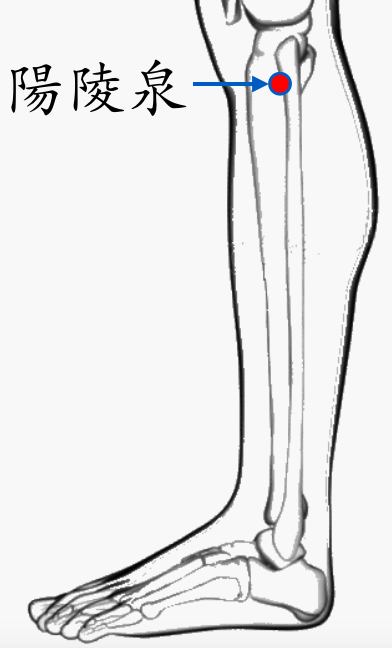

【穴位名稱】: 陽陵泉 (GB34)

【治療症狀】: 出血 口苦 肝硬化 膽結石 嘔吐 胃、十二指腸潰瘍 膽囊炎 小便不利 陽萎 月經過少 月經過多 經痛 赤白帶下 腦血栓(無昏迷過程) 腦炎後遺癥 小兒麻痺 周圍性顏面神麻痺 肋間神經痛 周期性癱瘓 重癥肌無力 雷諾氏病→末端血液循環差 肩膀痠痛 肩痛不舉 手指痛 手脹_手麻 肘痛 腕痛 膝蓋疼痛 膝蓋變形 小腿肚痛 肋痛 腰酸腰痛 坐骨神經痛 帶狀皰疹 面神經麻痺 口眼歪斜 口苦
【取穴位置】: 小腿外側部，腓骨頭前下方凹陷處。今作膝下二寸。
【針刺方法】: 直刺1～2吋。艾炷灸3-5壯，艾條溫灸10-15分鐘。